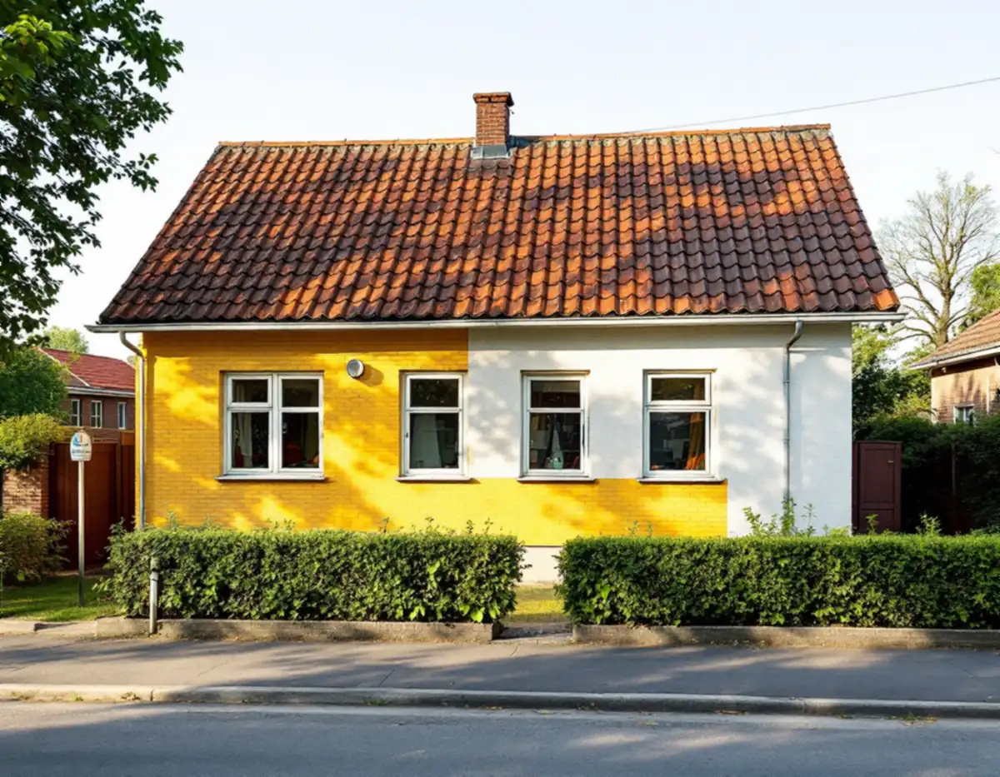
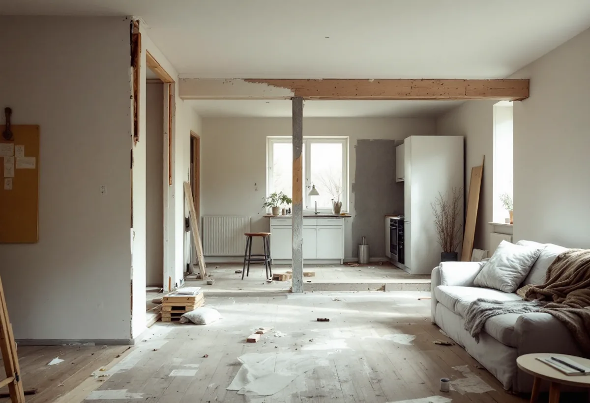
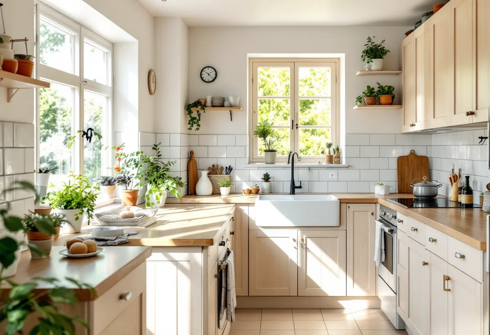

Platsbesök
Vi går igenom huset, fasaden, fönstren och planlösningen.
I Handen, Jordbro, Vendelsö och Västerhaninge finns många villor och kedjehus från folkhemsåren, och kommunen råder ägarna att värna husens utsida. Geal Entreprenad AB totalrenoverar sådana hus i Haninge och gör det mesta av arbetet inifrån.

Haninges karaktärsmiljöer beskriver hur småhusen främst växte fram längs Nynäsbanan, som invigdes 1901. Områdena från folkhemsbygget 1940–1960 består av små enhetliga villor, kedjehus eller radhus i grupphusbebyggelse, med god och funktionell utformning.
1940-talets hus är ofta enkla en- eller tvåplansvillor i trä, puts eller fasadtegel med sadeltak eller valmat tak. 1950-talets områden är mer individuellt utformade, med rött eller gult tegel kombinerat med grov spritputs eller trä i mustiga kulörer. Som exempel nämns Handen, Jordbro, Vendelsö, Vendelsömalm och Västerhaninge.

Kommunens råd för de här områdena är tydliga: byggnadernas bärande karaktärsdrag bör värnas vid om- och tillbyggnader, och större exteriöra ändringar som tilläggsisolering eller tillbyggnad i fasad mot allmän plats bör undvikas. Fasadändringar som avviker från den ursprungliga utformningen ska undvikas, och en tegelfasad ska till exempel inte putsas.
Råden gäller alla småhusområden i kommunen från 1940–60-talet, även de som inte är utpekade som särskilt värdefulla. För en totalrenovering betyder det att energiåtgärder och nya planlösningar i första hand görs inifrån, medan fasaden underhålls i sitt ursprungliga utförande. Vinden, golven och installationerna är där de stora förbättringarna oftast kan göras utan att husets utsida ändras.
Karaktärsmiljöerna beskriver dörrar och fönster som en bärande del av byggnadens karaktär. Ursprunglig utformning och färgsättning ska värnas och vara utgångspunkt vid förändring.
I en totalrenovering är fönstren ofta en av de största posterna. Vi går igenom om de går att renovera, eller om nya fönster kan göras med samma indelning och proportioner. Läs mer under fönsterrenovering i Haninge och fönsterbyte i Haninge.
Många vill öppna upp mellan kök och vardagsrum. Haninge kommun skriver att ändringar som påverkar byggnadens bärande konstruktion eller stomme kräver en anmälan, och att du behöver startbesked innan arbetet börjar. Är du osäker på om en vägg är bärande ska du kontakta en konstruktör.
Ritningar som visar husets bärande delar kan ibland finnas i kommunens bygglovsarkiv. Kommunen skriver att konstruktionsritningar ska lämnas in, och att de ska tas fram av konstruktörer och vara fackmannamässigt redovisade. En kontrollplan hör också till anmälan.
Ska du installera eller ändra anordningar för vattenförsörjning eller avlopp i huset eller på tomten ska du enligt kommunen göra en anmälan om VA-arbete. Det sker med en blankett till kommunens VA-verksamhet.
Kommunen påpekar att den inte har information om hur ledningarna går innanför fastighetsgränsen. Därför filmar eller provar vi befintliga ledningar innan nya badrum och kök placeras. Om badrummet kan du läsa under badrumsrenovering i Haninge.

Vi går igenom huset, fasaden, fönstren och planlösningen.
Ritningar hämtas ur bygglovsarkivet där de finns.
Bärande ändringar och VA-arbete anmäls.
Varje del och varje moment står för sig.
Fasaden underhålls, nytt görs inne i huset.
Kontrollplanen fylls i och lämnas till kommunen.
För ett småhus räknar Skatteverket bland annat att riva väggar och bygga om planlösningen, arbeta med tilläggsisolering, sätta kakel och klinker och göra förbättringsarbeten som rotarbete.
Avdraget är högst 30 procent av arbetskostnaden och högst 50 000 kronor per person och år, och äger ni huset två kan båda göra avdrag. Material och resor ger inget avdrag. Geal drar av beloppet direkt på fakturan.
Husets storlek och skick, om bärande väggar ändras, fönstren, el och VVS och vilka ytskikt du väljer. Läs mer under villarenovering. Efter ett gratis platsbesök får du ett skriftligt kostnadsförslag.
Renovera hela huset eller lägenheten.
Villarenovering →Takbyte, takbesiktning och plåtarbeten.
Takläggare i Haninge →Dalarö, Vendelsö och Brandbergen.
Takrenovering i Haninge →Skjutfält, kulturmiljö och skärgårdstomter.
Attefallshus i Haninge →Vakuumtoalett, sluten tank och öarna.
Badrumsrenovering i Haninge →Nytt hus och tillbyggnad i omvandlingsområden.
Byggföretag i Haninge →Mustiga 50-tal och pastell.
Fasadmålning i Haninge →Tegelvillor, grupphus och panelade gårdar.
Fasadrenovering i Haninge →Sportstugor och fönster i skärgårdsväder.
Fönsterbyte i Haninge →Gårdens fönster, från boningshus till ladugård.
Fönsterrenovering i Haninge →Egnahem, sportstugor och hus i sluttning.
Golvläggare i Haninge →Laga och slipa trägolvet i villan.
Golvslipning i Haninge →Egnahem, grupphus och Dalarö.
Köksrenovering i Haninge →Falsad plåt, sjöbodar och beslag i Haninge.
Plåtslagare i Haninge →Verandor, altaner och skärmtak.
Snickare i Haninge →Kontrollplan och riskbedömning vid takbyte.
Takbyte i Haninge →Ny tapet och gamla lager i äldre villor.
Tapetsering i Haninge →Lov, situationsplan och kontrollplan.
Tillbyggnad i Haninge →Egnahem, grupphus och sommarvillor i Haninge.
Målare i Haninge →